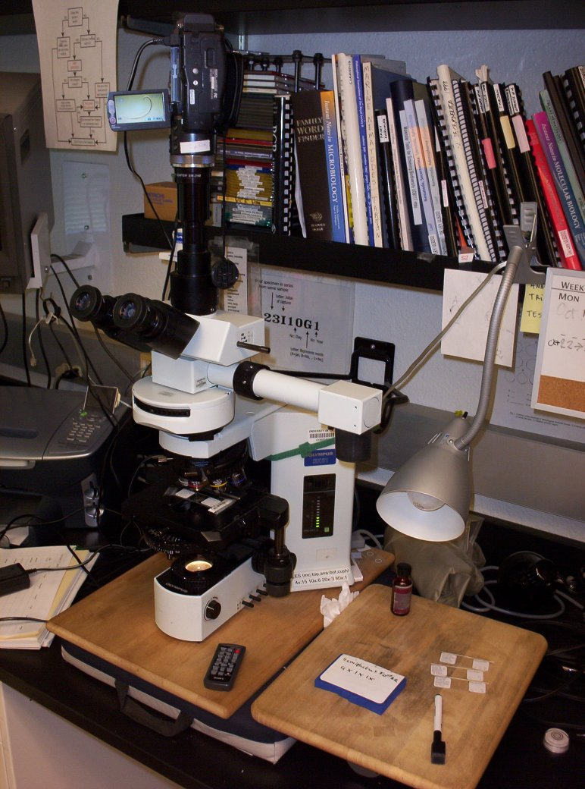

Note the remote lying next to the base of the microscope.
Our cheap substitute for a $1000 vibration table is a wooden carving board ($10) placed on top of a medical gel-filled wheelchair seat cushion ($50).
The microscope is strapped with velcro to a bicycle clamp on the wall - this is earthquake country after all!
< Back to the list of parts